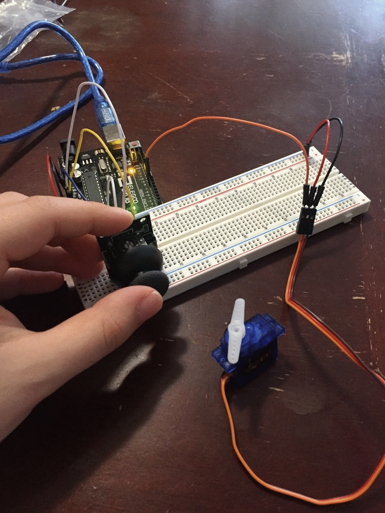
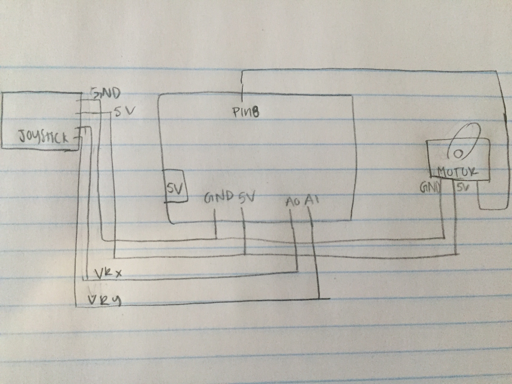
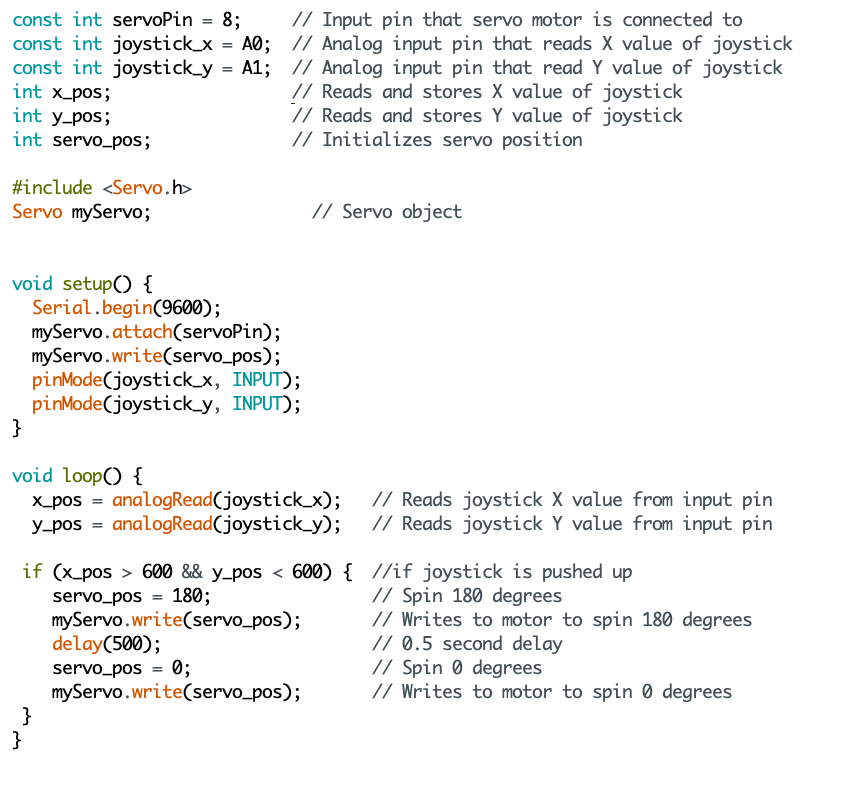

Assignment 5: Motors!
My Motor Circuit!
The assignment: Using an input device, a joystick, to control a DC or servo motor.

For this assignment, I used a servo motor and a joystick (Arduino Joystick Module). The joystick's GND pin was connected to GND, 5V pin to 5V power, VRx to pin A0, and VRy to Pin A1. The servo motor is connected to 5V power, GND, and to Pin 8. Pins A0 and A1 of the joystick serve as input pins, whereas Pin 8 is an output pin to the servo motor. The code allows for the servo motor to spin 180 degrees when the joystick is pushed upwards.
Calculations and Schematics

The Setup

The Code
